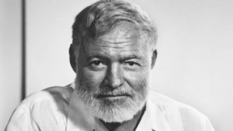
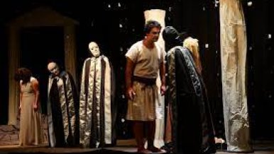
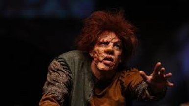
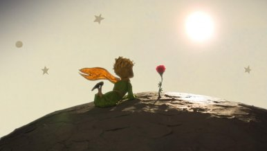
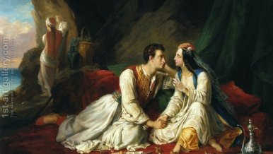
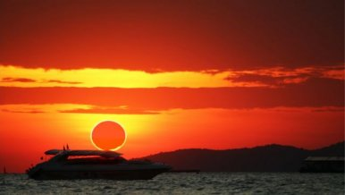
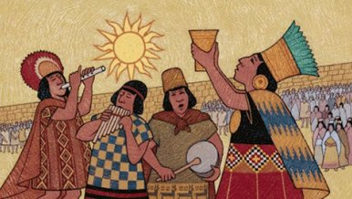

Sənət və ədəbiyyat dərgisi
Haqqımızda
Reklam
Əlaqə
Ana səhifə
Gündəm
Müsahibə/Sorğu
Sənət
Ədəbi gənclik
Kino/Teatr
Fəlsəfə
Foto
Video
Digər
Blog
Səsli kitab
Elektron kitabxana
Fəlsəfə
Fəlsəfə
28 İyun 2022 / 10:01
Sevgi və gözəllik
- Rahid Ulusel yazır

Fəlsəfə
30 İyun 2022 / 08:53
Yad müharibə -
Tatyana Qrişenkova yazır

Fəlsəfə
28 İyun 2022 / 10:01
Ekzistensializm ideyalarının özünəməxsusluğu
- İvan Morozovun məqaləsi

Fəlsəfə
28 İyun 2022 / 09:44
Eybəcərliyin anatomiyası

Fəlsəfə
07 İyun 2022 / 09:34
Xoşbəxt dünyaya qayıdış -
Balaca şahzadənin ümidləri

Fəlsəfə
03 İyun 2022 / 07:38
Don Juan məntiqi

Fəlsəfə
05 May 2022 / 15:44
Məzarda gizlənən qəlb
- Fəxri Uğurlu yazır
Fəlsəfə
02 Mart 2022 / 11:03
Səhnədə heç kim yoxdur

Fəlsəfə
02 Mart 2022 / 10:34
Qisas almaq yolları haqqında poema
“Nibelunqlar haqqında nəğmə”